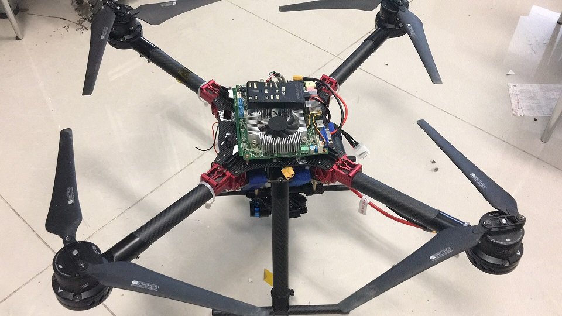

|
Homepage of THUBOT Advisor: Geng Lu 521 Central Main Building, Tsinghua University |
||
|---|---|---|
|
 |
||
About the competitionThe International Aerial Robotics Competition (IARC) is the longest running university-based robotics competition in the world. It began in 1991 on the campus of the Georgia Institute of Technology and is now in its 26th year. The seventh mission began in 2014 which poses three new challenges to the participants: (1) interaction between aerial robots and ground robots; (2) no external navigation systems; (3) interaction with other aerial robots. About our teamWe are the team THUBOT from Tsinghua University, Beijing, China. Our team is divided into three groups: vision, simulation, and control. The vision group is responsible for processing data from RGB-D camera and laser. The simulation group establishes simulation platform which is used for designing flying strategies. The control group aims to maintain a steady flight for our robot. Every week each group works on their respective tasks. Every Monday the entire team gathers for discussion and works to put the parts together. |
||